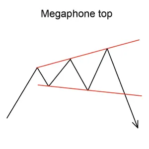
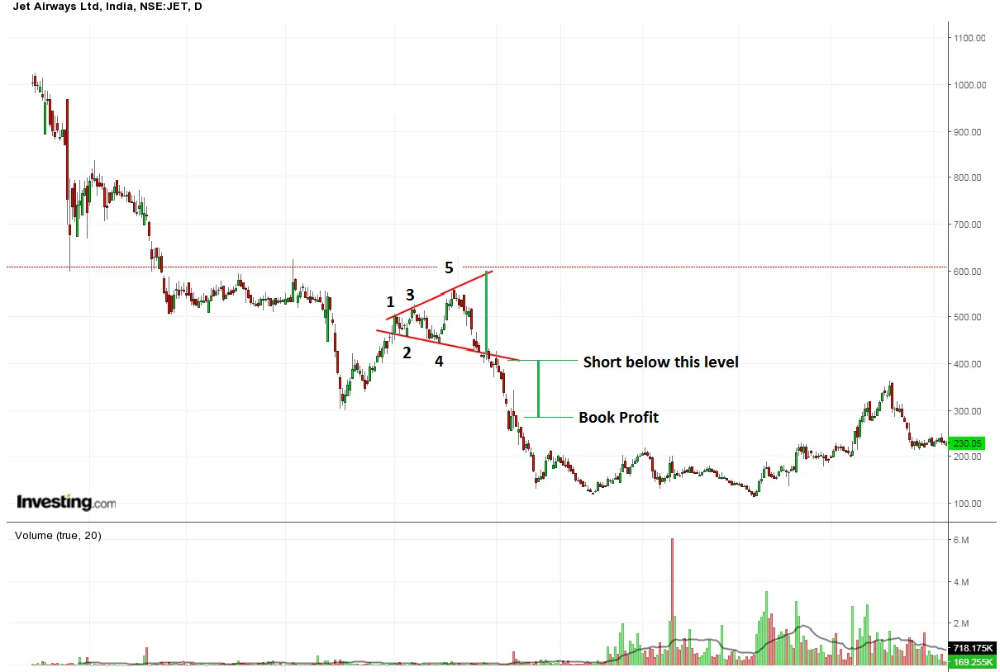

Implicación
Un Megaphone Top también conocido como un Top de ampliación se considera una señal de baja, lo que indica que la tendencia ascendente actual puede revertirse para formar una nueva tendencia descendente.
Descripción
Un Megaphone Top es una formación relativamente rara y también se conoce como un Top ampliado. Su forma es opuesta a la de un Triángulo Simétrico. El patrón se desarrolla después de un fuerte avance en los precios y puede durar varias semanas o incluso unos meses.
Un Megaphone Top se forma porque los precios hacen una serie de altos y bajos más altos. El Megaphone Top suele consistir en tres picos ascendentes y dos troughs descendentes. La señal de que el patrón está completo ocurre cuando los precios caen por debajo del mínimo inferior.

El volumen en el Megaphone Top suele alcanzar los picos junto con los precios. Es habitual que los volúmenes de negociación aumenten o permanezcan altos durante la formación de este patrón. La eventual breakout y reversión puede ser difícil de identificar en el momento de su ocurrencia porque el volumen no parece inusual.
Consideraciones de negociación
Precio objetivo
El precio objetivo proporciona una importante indicación sobre el movimiento potencial de los precios que este patrón indica. Considere si el precio objetivo para este patrón es suficiente para proporcionar rendimientos adecuados después de que sus costos (como comisiones) se hayan tenido en cuenta. Una buena regla es que el precio objetivo debe indicar un retorno potencial de más del 5% antes de que un patrón se considere útil, sin embargo, usted debe considerar el precio actual y el volumen de acciones que tiene la intención de negociar.
Criterios que respaldan
Volumen
El volumen en el Megaphone Top suele alcanzar los picos junto con los precios. Un fuerte pico de volumen el día de la confirmación del patrón es un indicador fuerte en apoyo del potencial para este patrón.
Subyacente
Comportamiento La creación del patrón refleja un período de tiempo en que los toros y los osos están luchando para obtener el control de la población. El patrón se produce después de que los toros han estado cargando y impulsando el precio de las acciones considerablemente más alto. Durante la formación del Megaphone Top, sin embargo, los osos están ejerciendo una influencia creciente en el precio y lo hacen establecer una serie de bajos más bajos. La creciente volatilidad eventualmente crea una sensación de incertidumbre, conduce a la obtención de beneficios, y disuade a algunos de los toros de hacer nuevos compromisos. Los osos finalmente triunfan.
